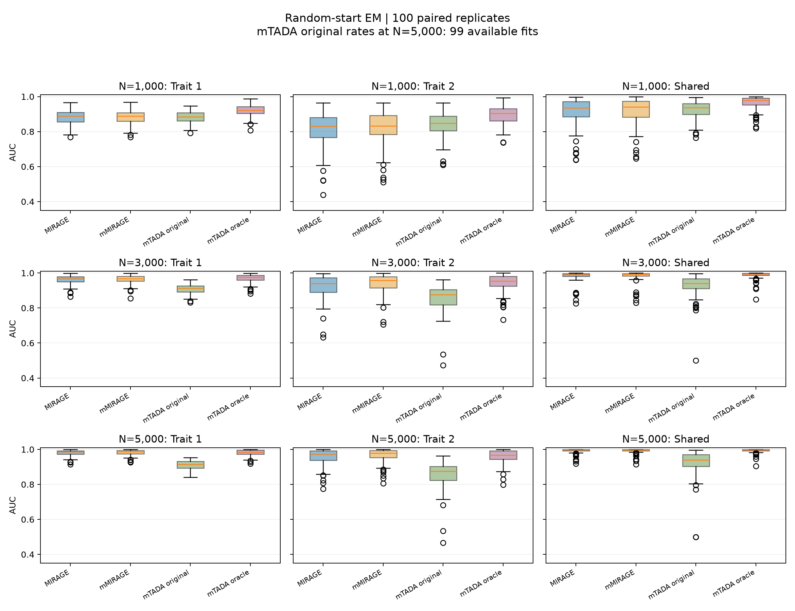
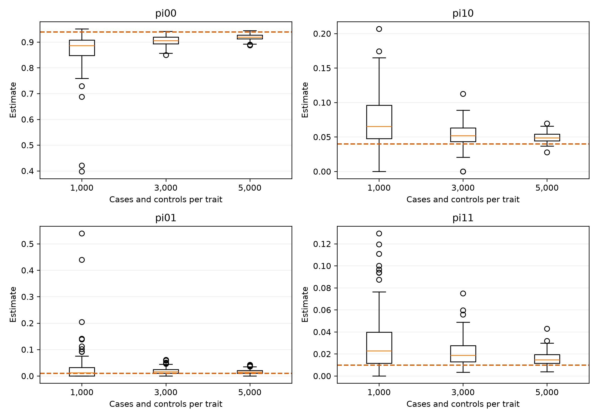
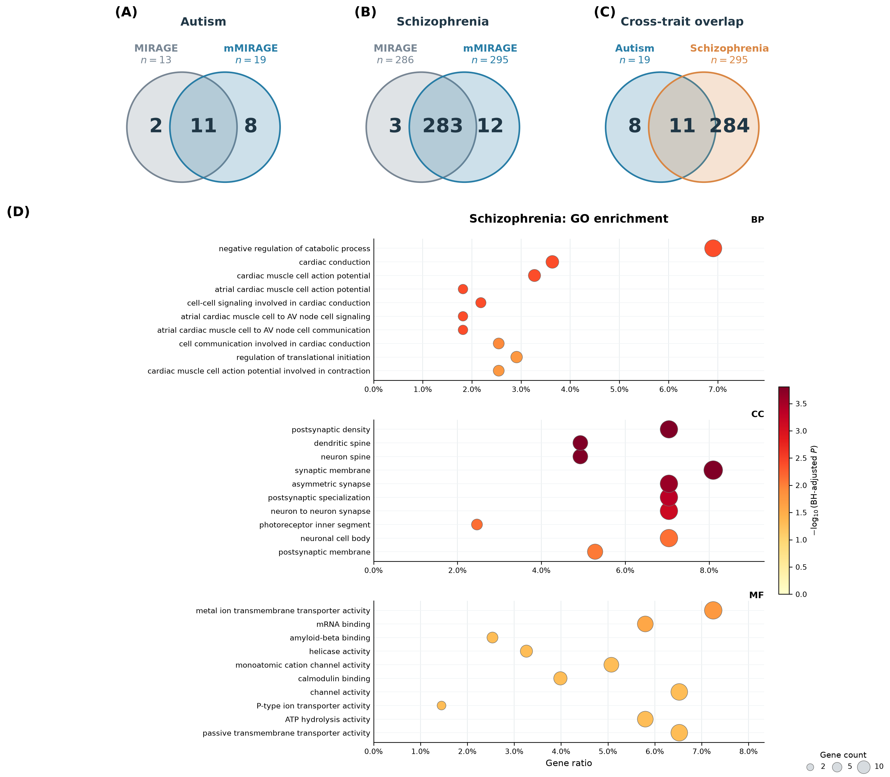

Joint rare-variant gene discovery from two traits
mMIRAGE combines trait-specific variant-level case-control evidence through a four-state gene-risk model. It allows shared genes without requiring the same causal variants in both studies.
remotes::install_github("Qishi7/Mirage_Twotraits")
library(mmirage)
print(fit)
fit$diagnostics$convergence
mirage_convergence(fit, hessian = TRUE)Fits report EM stopping criteria, iteration limits, parameter boundaries and constrained stationarity. Optional Hessian diagnostics assess local curvature. Numerical convergence does not establish parameter identification or calibrated FDR.
500 genes, 100 variants per gene per trait, N=1000/3000/5000 cases and controls, and 100 paired replicates. Five percent of variant baseline rates receive a fivefold multiplier. MIRAGE methods use Gamma-integrated variant BFs and five random EM starts selected by final likelihood.
| N | Method | Trait 1 | Trait 2 | Shared |
|---|---|---|---|---|
| 1000 | Joint mMIRAGE | 0.8822 | 0.8215 | 0.9174 |
| 1000 | mTADA (oracle rates) | 0.9205 | 0.8929 | 0.9635 |
| 1000 | mTADA (original rates) | 0.8824 | 0.8413 | 0.9232 |
| 1000 | Single-trait MIRAGE | 0.8829 | 0.8109 | 0.9158 |
| 3000 | Joint mMIRAGE | 0.9643 | 0.9377 | 0.9818 |
| 3000 | mTADA (oracle rates) | 0.9701 | 0.9417 | 0.9873 |
| 3000 | mTADA (original rates) | 0.9094 | 0.8592 | 0.9273 |
| 3000 | Single-trait MIRAGE | 0.9613 | 0.9218 | 0.9813 |
| 5000 | Joint mMIRAGE | 0.9821 | 0.9652 | 0.9919 |
| 5000 | mTADA (oracle rates) | 0.9804 | 0.9581 | 0.9930 |
| 5000 | mTADA (original rates) | 0.9106 | 0.8557 | 0.9228 |
| 5000 | Single-trait MIRAGE | 0.9801 | 0.9570 | 0.9922 |
Joint EM stopping criteria were met in 98/100, 100/100 and 100/100 selected fits as N increased. Original-rate mTADA at N=5000 has 99 available fits; mTADA receives the true marginal risk proportions.


At nominal 5% Bayesian FDR, mean joint empirical FDP at N=3000 is 9.50%, 9.08% and 10.82% for trait 1, trait 2 and shared risk. Ranking and convergence should be interpreted alongside calibration. The conditional analysis likelihood is a working model for the random-effect Poisson generator.
| Method | Autism genes | Schizophrenia genes |
|---|---|---|
| Single-trait MIRAGE | 13 | 286 |
| Joint mMIRAGE | 19 | 295 |
At nominal 5% Bayesian FDR, eight genes meet the shared-risk posterior criterion. The intersection of the marginal joint discovery lists contains 11 genes, a different criterion. The schizophrenia risk-gene proportion is fixed at 5%.

Input harmonization remains unresolved: the original preparation joined variants from different study genome builds without liftover. Numerical convergence does not repair this issue; the real-data results remain exploratory pending corrected preparation and reanalysis.